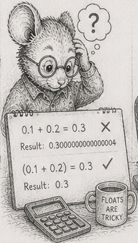

48 - Reductions don’t parallelize freely

§31 earned a strong claim: systems with disjoint write-sets parallelise freely - across processes, since the GIL rules out CPU-bound threads - with no locks and no coordination. §16 earned another: same seed, same system order, same world, every run. Both are true. Put them under one stress the first act never applied - a different number of workers - and a seam opens between them. The world that hashed identically on your four-worker laptop hashes differently on the thirty-two-worker server. Same code, same seed, same log. Different machine, different world.
This is the worst class of bug, because it passes. It passes every test you ran, because you ran them at one worker count on one machine. It surfaces only after the move to the hardware you have never seen - the unattended server of §46 and §47, where you cannot attach a debugger and the only symptom is that two nodes that should agree do not. The determinism survived everything except the deployment.
The cause is one fact and one consequence.
Floating-point addition is not associative. (a + b) + c is not always a + (b + c) in the last bits, and Python’s float is an IEEE-754 double, so this is its arithmetic exactly. Each addition rounds its result to fit the mantissa, and rounding depends on the magnitudes being added. Change the grouping and you change which intermediate values get rounded, and the final bits move.
A parallel reduction groups by worker count. Split a sum of a million values across four processes and you add four partials, each a sum of 250,000 in some order, then combine the four. Across eight processes you add eight partials of 125,000. Serially you add all million in index order. Three different groupings, three different roundings, three different results in the low bits. The reduction’s output is a function of how many workers computed it. Same data, same seed, more workers, different number. (And it is not only multiprocessing: numpy.sum uses pairwise summation internally - a tree whose shape depends on the array’s size and the SIMD width - so arr.sum() already differs in the low bits from a Python for-loop fold, for the same reason. The grouping is the bug, wherever it comes from.)
And it does not stay in the low bits. That last-bit difference is an input to the next tick. A simulation is a feedback loop; small differences amplify. Over enough ticks two worlds that started one ULP apart are visibly, structurally different - different creatures alive, different population. The §16 world-hash that was the bedrock of replay, distribution, and testing now depends on the worker count. “The log is the world” (§37) quietly acquired an asterisk: at the same worker count. Distribution - two nodes converging from one log - breaks outright.
The canary is precise: hashes stable when you fix the worker count, unstable when you change it. If your world hashes match locally and diverge in CI, and the CI box runs a different number of workers, suspect a parallel floating-point reduction before anything else.
The fix is not “stop parallelising.” §31 still holds: the per-element work parallelises freely. The reduction is the one place where parallel work meets a single shared result, and that is the only place order leaks back in. So you isolate the non-determinism to the combine step and make that deterministic. Determinism is a property of the combine, not the compute. Two ways to buy it.
Fix the reduction order. Choose a fixed number of partitions, independent of the worker count - say sixty-four - and reduce each into a slot indexed by its partition id. The workers share those fixed partitions however the scheduler likes; the partials land in id order regardless of which worker computed which, and a single serial fold walks the slots in id order. The grouping is now defined by the fixed partition count, not by how many workers ran. The easy mistake - and it is the obvious one - is to make the partition count equal the worker count, giving each worker its own partition: that changes the grouping right back, and the result still moves with the number of workers. The number of partials must be fixed, not the number of workers. The expensive per-element work still runs on all workers; only the fold over a handful of partials is serial, and a handful is cheap.
Accumulate in integers. Integer addition is associative: exact, order-independent, identical on one worker or sixty-four. Scale each value to a fixed-point integer (and Python’s int does not overflow, which removes the one footgun the compiled languages carry here), sum exactly in any order, scale back at the end. There is no rounding to reorder because there is no rounding until the final scale-back. It fits best where the quantity is bounded and its precision is known, like a sum of energies. Integer accumulation is deterministic by construction; fixed-order floating-point is deterministic by discipline. Where you can bound the range, integers are the stronger guarantee.
One forward note. Processes are not the only reducer that reorders. numpy.sum adds in pairwise blocks and SIMD lanes; a GPU reduction adds in a tree across thousands of lanes. All reorder, all diverge, and all take the same two fixes. The discipline you build here is the precondition for trusting a vectorised or accelerated reduction at all.
The exclusion, named: this is about reproducibility, not accuracy. A fixed-order or integer reduction is not more correct in the numerical-analysis sense - it does not get you closer to the true sum - it gets you the same answer every time, which is what replay, distribution, and a passing test across machines require. If you need accuracy too, that is math.fsum or compensated summation, a separate technique layered on top.
Measurements
The divergence is a demonstration, not a benchmark. Measured (reduction_divergence.py, one million harmonic values), the low bits of the reduction change with the worker count:
| workers | racy (partition = workers) | fixed-order (64 partitions) | integer |
|---|---|---|---|
| 1 | ...1df0d6 | ...1df271 | ...025a920c |
| 2 | ...1df2a6 | ...1df271 | ...025a920c |
| 4 | ...1df2c6 | ...1df271 | ...025a920c |
| 8 | ...1df234 | ...1df271 | ...025a920c |
The racy column is a different result at every worker count; the fixed-order and integer columns are bit-identical across all four. (The fixed-order value differs from the racy one-worker value in the low bits, because a 64-partition grouping rounds differently from index order - it is reproducible, not more accurate, exactly the exclusion named above.) The cost of the fix is the serial fold over the partition count - a few dozen values against the parallel work it guards, a rounding error on the §31 speedup. The divergence and both fixes are machine-independent facts (IEEE-754 non-associativity and integer associativity), not measurements that vary by box.
The simulator gives the complementary evidence: forage sliced across processes is bit-identical to serial, precisely because it is a per-element map with no reduction across targets - the safe case. Add a global energy sum each tick (exercise 2) and you are in the trap.
Exercises
- Make it diverge. Sum a list of one million
floats inwcontiguous chunks (folding each chunk, then the partials) atw= 1, 2, 4, 8. Hash each result. Show the hashes differ, and that they are each stable on repeated runs at a fixed chunk count. The bug is real and reproducible per worker count. - Compound it. Feed that reduction into the simulator (say, a global energy normalisation each tick). Run 1,000 ticks at two different worker counts from the same seed. Hash the worlds. Watch a last-bit difference become a different population.
- Fix the order. Reduce into a fixed 64 partitions (not one per worker), then fold the partials serially in id order. Re-run exercise 1 across worker counts: the hashes are now identical. Then make the partition count equal the worker count and show it diverges again - the partition count must be fixed, not the worker count.
- Accumulate in integers. Scale the energies to fixed-point
int, sum exactly, scale back. Show the result is identical across worker counts and any grouping. Note that Python’sintcannot overflow, so the only judgement left is the scale (precision), not the range. - Replay across worker counts. Replay one committed log (§46) at two worker counts. Bit-identical world only with a fixed-order or integer reduction. This is the §37 distribution claim, made true on heterogeneous hardware.
numpy.sumis a reduction too. Comparearr.sum()against a Pythonfor-loop fold and againstmath.fsumon the same million-element array. They differ in the low bits. Explain which grouping each uses, and which one you would pin for a world hash.- (stretch) The canary test. Write a CI check that runs the simulator at two worker counts and asserts equal world hashes. Make it fail today; fix it; keep it - it is the regression guard that catches the next racy reduction before a server does.
Reference notes in 48_reductions_dont_parallelize_freely_solutions.md.
What’s next
Three of the four unattended questions are answered: the system survives the stop (§46), reports what it is doing (§47), and gives the same answer on every machine. The last one is the hardest deadline of all. §49 takes on hard real-time - where a missed deadline is not a dropped frame but a fault - and marks the line between the soft budgets the book taught (§4) and the worst-case-execution-time discipline a control loop demands.